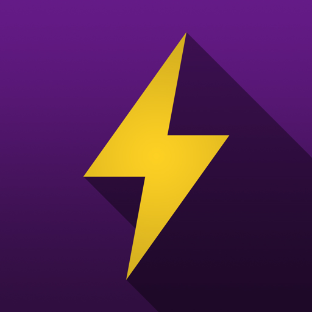

At Agendev, we excel in a variety of different fields. Here is some of our best work from our areas of expertise.
Our UI/UX Designer, Cole Hastings, set out to create a personal website for his fitness brand that would appeal to his target audience.
Using Adobe XD, a popular UI design software, Cole started to design the wireframe (the basic flow of the website). He had to take into account how the users would get to each page, and allow them to do so without any difficulties.

With the wireframe in mind, Cole was able to design a modern, mobile responsive website, with a different landing header photo on each page, each showcasing different gym exercises. This design uses gradient background "swooshes" to add a little more pop to the website, and makes it look much more visually appealing. The fonts used (Raleway and Bebas Neue) were also taken into consideration when deploying the final design. These are fonts that appeal most to the people who he would be using the website most (18-30 years old, vegan, into fitness), because they're sharp and modern.
A native iOS social media platform
Adobe XD was used to design the look of Zaparelli. The interface that was required for this project included a "Top Zappers" Page, which acts as a high score system. "Zapping" another profile ranks them higher on this page.


An example of the types of landing pages Cole likes to design. Simple, sleek, and effective.
The design of this landing page comes from the software "Figma"
Nick was thrown into this project towards the end of development. Nick was given designs and features to implement using and lists of front end and back end issues to fix and resolve. Nick worked directly with the company founders throughout the development process. The website was built using an AngularJS front end, NodeJS+Express back end, and a MYSQL database. The site also utilizes several different social media platforms for user authentication and user account creation. The mobile application was built using an Ionic, Cordova, and Google Firebase.
Nick worked together with 3 teammates at the Cornell University's annual 48 hour hackathon to build Academic Live Chat. ALC is a web application built with MongoDB, Express, React, NodeJS, SocketIO, Google Cloud Platform, and IBM Watson provides a variety of features to connect you with someone to talk about a topic of similar interest. The application uses profile matching through user account similarities and Socket IO to pair individuals. Socket IO is also used for messaging and peer to peer video chatting between users.

Nick was given this project towards the end of development, where he polished the overall design of the website and added company, speaker, and event content.
Nick joined Backyard Crypto to re-architect the entire site and re-write their front end from scratch in ReactJS. The backend of the site is built entirely using Ruby on Rails and PostgreSQL.
This application uses geolocation, Google Maps API, Google Places API, and Google Firebase to give realtime data on people attending bars in the users vacinity. Some of this data includes ratings, comments, and the number of users currently attending a particular bar. Nick developed the entire application from the ground up using Swift and the Google Cloud Platform.

Our client wanted us to build a completely new checklist application software to maintain his businesses and make sure they were finishing tasks on time. The client had used another checklist software but wasn't fully happy with it. This application allows you to assign checklists to employees (made in a template editor) and have them finish it online.This application was built using ReactJS.
Social MediaMarketing
"Seasoned Tofu" Brand
The personal brand of our designer, Cole Hastings.
Cole's brand, based around fitness and personal development, has grown into a massive online audience where thousands of people are reached each day.
Some YouTube stats:1100+ subscribers in under 110 videosOver 60,000 total viewsOver 175,000 minutes watched
Cole is an expert in YouTube SEO and has over 50 videos in competitively ranked tags. He also shoots all his videos himself, and edits in Adobe Premiere Pro.
Some Instagram Stats:
Cole's YouTube Cole's Instagram17,000+ followers in under 600 posts
30+ posts with over 1,500 likes
20+ posts with over 100,000 impressions